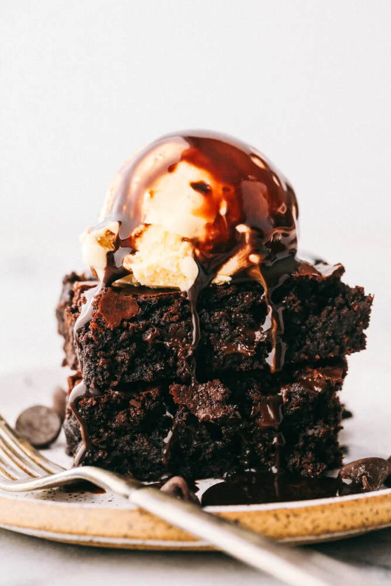

Description
Who doesn't love brownies, my family and I sure do. This recipe produces a classic brownie with room for your own
customizations. Fill free to add carmel, walnuts, what about marshmallows (Hmm).
It doesn't matter the choice is yours. Follow this simple recipe to brownie blissfulness.
Ingredients:
- 1 cup unsalted butter melted
- 2 & 1/4cups granulated sugar
- 4 large eggs
- 1 tablespoon vanilla
- 1 & 1/3cup all-purpose flour
- 1 teaspoon salt
- 1 teaspoon baking powder
- 3/4cup cocoa powder
- 1/4 cup dark cocoa powder (Hershey’s special dark cocoa powder)
- 4 oz. chocolate chips or chunks
Steps
- Preheat the oven to 350 degrees Fahrenheit and spray a 9×13 baking pan with pan spray and line with
parchment paper. Set aside.
- Whisk together butter and sugar in a medium bowl until well combined. Add in the eggs and vanilla and whisk
until combined.
- Sift the flour, salt, baking powder, and cocoa powder into another bowl. If you want a darker brownie, go
ahead and use 1/2 cup regular cocoa powder and 1/2 cup dark cocoa powder. Gently mix the dry ingredients
with the wet ingredients until just combined. Gently stir in chocolate chips.
- Pour batter into the prepared pan and bake for about 35-40 minutes, until a toothpick comes out clean. If
you like your brownies a little more on the gooey side, bake for 30-35 minutes.
- Allow the brownies to cool for at least 30 minutes before serving. Pair with ice cream for a delectable
treat!